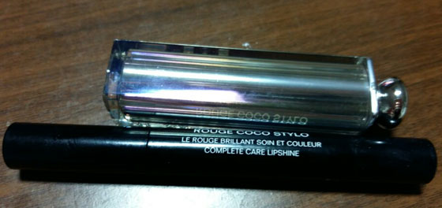
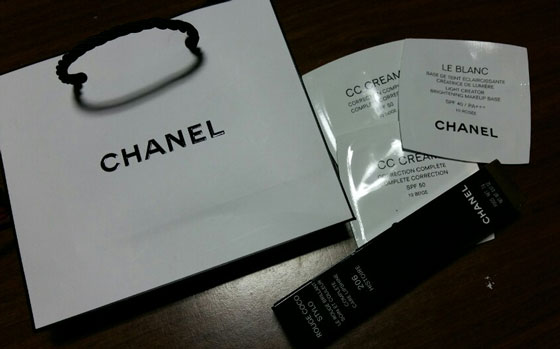
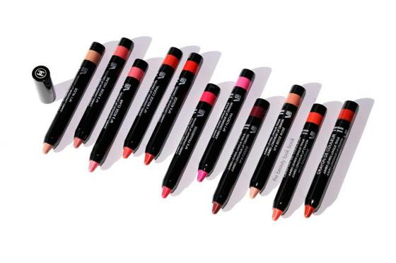
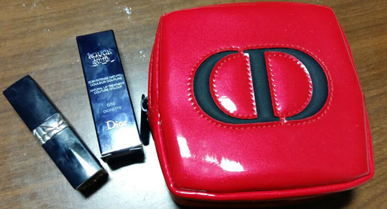
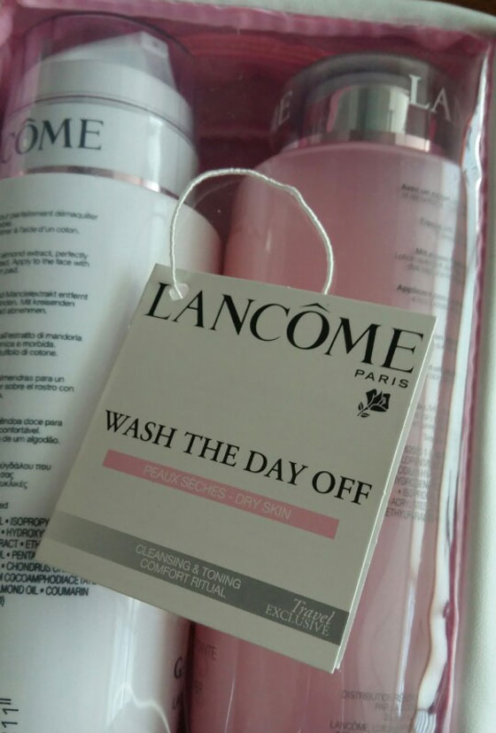
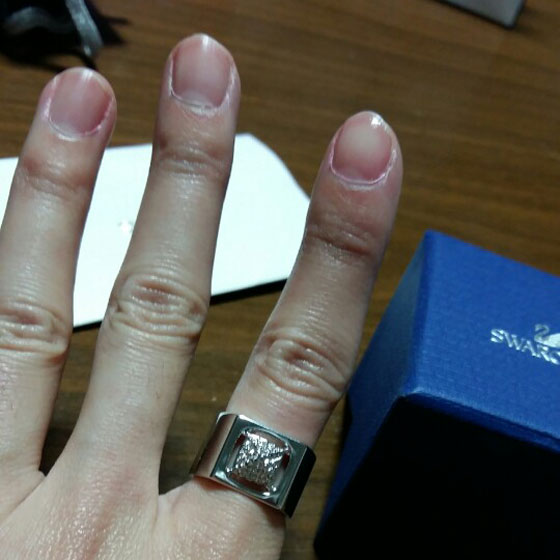
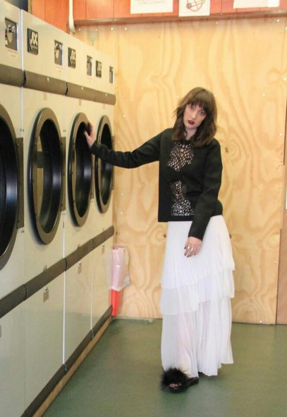
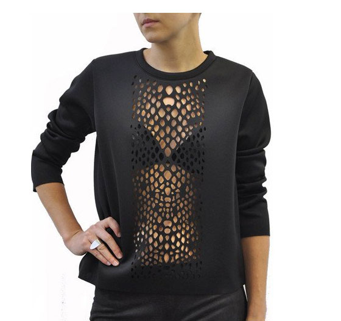
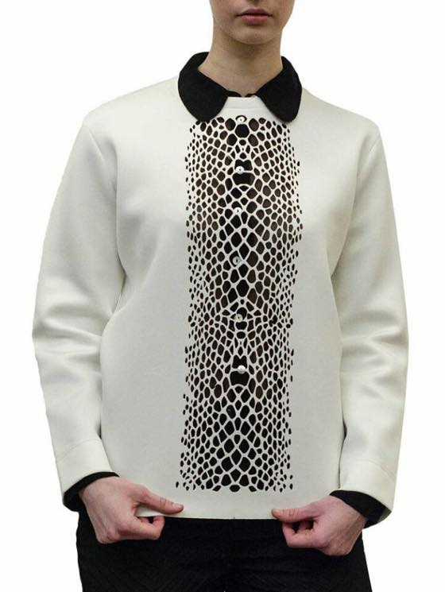

작년 최고 잘쓴 립스틱은 샤넬 스틸로 214 메세지 & 디올 어딕트 976 입니다
둘다 거진 다 사용했어요 +_+ 립스틱 공병(?)이라니 안나수이 400번 이후 처음인듯 ^^;;;
양쪽모두 쵹쵹이 타입이라 파우치에 넣고다니니 금방 사용한듯 합니당
역시 파우치에 넣고다니면 금방금방 쓰는군욤 //ㅂ//
이미 갖고있는 립스틱은 많다만 그래도 두개나(?) 공병 비스끄무리하게 바닥을 봤으니 새로 하나 사와야 하는것 아니겠습니꽈 ^^

해서 이번엔 206 히스토리 구매했습니다.
세상에는 써보고 싶은 브랜드도 많고 궁금한 제품도 넘쳐나서 재구매는 거의 안하는편인데
이제품은 작년에 구매한 립스틱중 젤 맘에들었어요 :)
작년에 구매할때 비슷한 시기에 산 MAC 허거블 체리글레이즈가 있어서 214 메세지와 206 히스토리 사이에서 고민하다가 좀 차분한 레드인 메세지 를 선택했었는데 이번엔 쨍한 히스토리 사왔습니당. 홍홍
인터넷 떠돌면서 화장품 소식은 정말 열심히 구경하는데 ^^;;
샤넬 르 루즈 크레용이 인터내셔널 출시가 1월15일 이라는데. 이제품도 궁금하네용 :)

출저:
그리고 아래는 최근에 구매한 것들

헝가리 부다페스트 공항 면세서 구입한 디올 립스틱 3개 세트 / 두개는 선물로 주고 688 DIORETTE 디올레뜨 남았습니다.
스아실 파우치가 이뻐서 충동구매 ^^;;;
집에 파우치 잔뜩 있으면서 왜 파우치 준다고 하면 이래 잘 낚이는지 ^^;;;

이것도 공항 면세서 구입
랑콤 클렌징 + 토너 대용량 세트
엄마님의 강력추천으로 구입했습니다. 엄마님께서 영쿡에 저 보러 오실때 공항면세에서 시세이도랑 랑콤 스킨케어 제품 대용량을 사다주시곤 했었죠 ^^;;;
오랜만에 랑콤 스킨케어 사용해보네용. :p

요건 체코여행중 산 셀프생일선물
스와로브스키 반지
관심없던 브랜드였는데 가격이 너무 싸서 바로 구매했습니다 ㅋㅋ
세일중이라 58유로정도에 구입했어요 +_+ 디자인 심플하니 맘에듭니다. 이 반지 구입하면서 드뎌 내 손가락 사이즈가 52 (S) 란걸 알게되었어;;
덩치랑 손이 참으로 언발란스 한데 ㅡㅡ;;; 52 사이즈 반지가 두번째 손가락에 딱 이네욤.


그리고 애정하는 브랜드 Bolongaro Trevor:: Lazer snake sweat
세일할때 뭐 안사면 죽는병에 걸렸나 -_-;;; 가격이 느므 싸길래 충동구매;;;
모델언니처럼 속옷만 입은채로 입기엔 용기가 부족하고^^;; 안에 칼라풀한 난닝구와 같이 입을겁니다 :)

흰색에 검은셔츠 매치해도 이쁘네욤 (하지만 관리할 자신이 없....)
세일시즌이라 그런지 의욕충만합니다 ^^;;